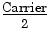
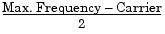

FM:DEViation {<peak deviation in Hz>|MINimum|MAXimum}
FM:DEViation? [MINimum|MAXimum]Set the peak frequency deviation in hertz. This value represents the variation in frequency of the modulating waveform from the carrier frequency. Select any value from 5 Hz to 40.05 MHz (limited to 550 kHz for ramps and 12.55 MHz for arbitrary waveforms). The default is 100 Hz. MIN = 5 Hz. MAX = based on the frequency of the carrier waveform as shown below. The :DEV? query returns the deviation in hertz.
Max. Deviation =  For Carrier < 40 MHz
Max. Deviation =  For Carrier > 40 MHz
· The carrier frequency must always be greater than or equal to the deviation. If you attempt to set the deviation to a value greater than the carrier frequency (with FM enabled), the function generator will automatically adjust the deviation to the maximum value allowed with the present carrier frequency. From the remote interface, a "Data out of range" error will be generated and the deviation will be adjusted as described.· The sum of the carrier frequency and deviation must be less than or equal to the maximum frequency for the selected function plus 100 kHz (80.1 MHz for sine and square, 1.1 MHz for ramp, and 25.1 MHz for arbitrary waveforms). If you attempt to set the deviation to a value that is not valid, the function generator will automatically adjust it to the maximum value allowed with the present carrier frequency. From the remote interface, a "Data out of range" error will be generated and the deviation will be adjusted as described.· If the deviation causes the carrier waveform to exceed a frequency boundary for the current duty cycle (square waveform only), the function generator will automatically adjust the duty cycle to the maximum value allowed with the present carrier frequency. From the remote interface, a "Settings conflict" error will be generated and the duty cycle will be adjusted as described.· If you select the External modulating source (FM:SOUR EXT command), the deviation is controlled by the ±5V signal level present on the rear-panel Modulation In connector. For example, if you have set the frequency deviation to 100 kHz, then a +5V signal level corresponds to a 100 kHz increase in frequency. Lower external signal levels produce less deviation and negative signal levels reduce the frequency below the carrier frequency.